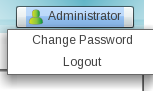
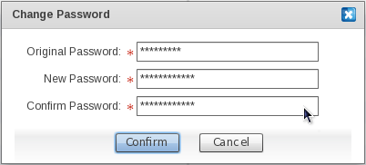

JOSSO.orgCommunity Documentation
Profile operations enable the Administrator to update an account's credentials, as well as to manage the console session.
To display the profile operations, click the "Administrator" button in the uppermost right corner.

To reach this screen, click the "Change Password" item in the "Administrator" menu.

Fill in the fields as needed, and click "Confirm".
If successful, the new password will be used to access the console.